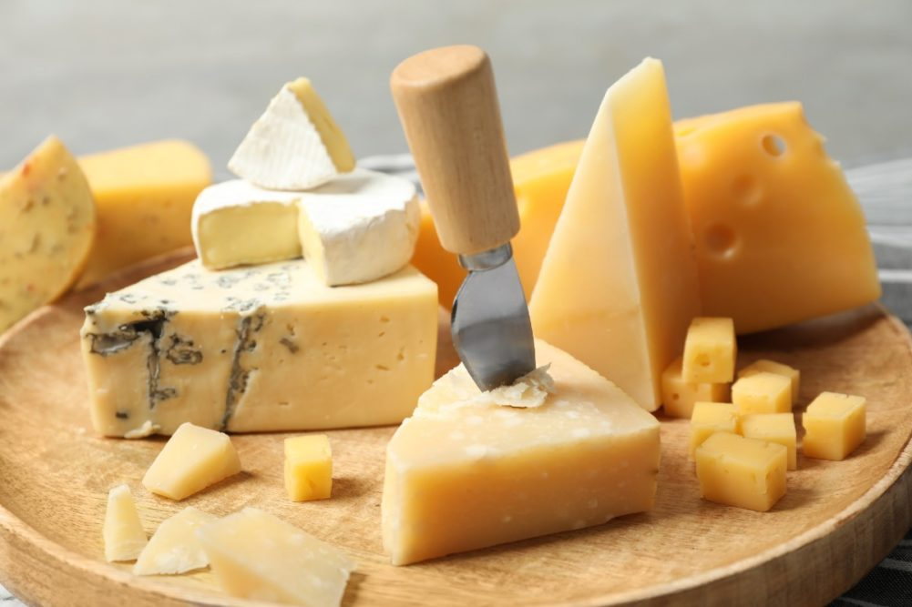

Cheese

-
Carbohydrate Content: Cheese is very low in carbs, with most
types containing less than 1 gram per serving (1 oz).
-
Varieties: Harder cheeses like cheddar, Swiss, and Parmesan tend
to be lowest in carbs, while softer cheeses like cottage cheese and
ricotta have slightly higher carb content due to lactose.